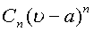
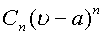
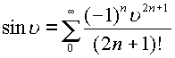
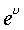
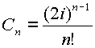
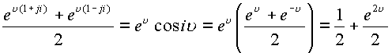
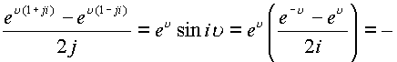

|
В. И. ЕЛИСЕЕВ ВВЕДЕНИЕ В МЕТОДЫ ТЕОРИИ
ФУНКЦИЙ ПРОСТРАНСТВЕННОГО КОМПЛЕКСНОГО ПЕРЕМЕННОГО |
|
1.4.1. Теорема Н. Абеля.
Если степенной ряд
сходится в точкеПонятие области сферы в пространстве
В силу
сходимости в точке  член ограничен по модулю и стремится к
нулю. Кроме того
член ограничен по модулю и стремится к
нулю. Кроме того
и
следовательно для всех n имеем
.Откуда
вытекает равномерная сходимость на сфере . Так как, K может быть сколь угодно близким к 1,
то имеем  .Из
теоремы Абеля, перенесенной в пространство
.Из
теоремы Абеля, перенесенной в пространство  следует,
что областью сходимости степенного ряда
следует,
что областью сходимости степенного ряда  является сфера
с центром в точке
является сфера
с центром в точке  радиуса R, равного
радиусу сходимости ряда.
радиуса R, равного
радиусу сходимости ряда.
Радиус сходимости определяется по формуле .
Следовательно ряд будет сходиться в области
сферы в
пространстве  . Это верхняя граница
сходимости.
. Это верхняя граница
сходимости.
Нижняя граница сходимости определяется как . Для изолированного направления
Область сходимости будет определяться как . Радиус сходимости становится коэффициентом перед делителем нуля. Нижняя граница .
При разложении
функции в ряд по степеням , происходит перенос изолированной оси в точкуСправедливо следующее утверждение
: Однозначная аналитическая функция, где коэффициенты ряда определяются формулами
или
, кривая  натянута на сферу радиуса , которая имеет
центром точку
натянута на сферу радиуса , которая имеет
центром точку  и целиком лежит в окрестности этой
точки. Радиус сферы сходимости определяется
расстоянием от точки
и целиком лежит в окрестности этой
точки. Радиус сферы сходимости определяется
расстоянием от точки  до ближайшей особой точки функции
до ближайшей особой точки функции  в пространстве
в пространстве
 , либо до ближайшей особой точки,
расположенной на изолированной оси. Остаются в
пространстве
, либо до ближайшей особой точки,
расположенной на изолированной оси. Остаются в
пространстве справедливыми следующие разложения
элементарных функций классического анализа
справедливыми следующие разложения
элементарных функций классического анализа
в точке.
| , , , |
(1.58.) |
Эти соотношения имеют место во всем комплексном пространстве
(1.59.) |
,в частности при
,получим.Радиус
сходимости этих функций равен 1. Ближайшими
особыми точками для них служат , а также точка . Функции и др.,
представленные сходящимся степенным рядом во
всем пространстве , будут называться целыми
функциями.
, будут называться целыми
функциями.
Сумма, разность и произведение целых функций дают целые функции. Это свойство широко используется при разложении в степенные ряды.
Рассмотрим ряд примеров. Функция представляется
степенным рядом ,сходящимся во всем пространстве  .Рассмотрим
сходимость ряда на конусе делителей нуля (или на
изолированной оси). Определим и
воспользуемся формулой возведения делителей
нуля в целую степень n, согласно
таблице
.Рассмотрим
сходимость ряда на конусе делителей нуля (или на
изолированной оси). Определим и
воспользуемся формулой возведения делителей
нуля в целую степень n, согласно
таблице
Подставим данные соотношения в исходный ряд
. Коэффициент  определяет радиус сходимости ряда по изолированной оси и определяет расстояние от нуля до особой точки на этой оси.
.
Таким образом, в области определяемой делителями нуля, ряд также имеет бесконечный радиус сходимости. Если
, то имеем , так как,
естественно, что в этих выражениях  рассматривается
без делителей нуля.
рассматривается
без делителей нуля.
Далее имеем 
Складывая и вычитая эти два равенства получим

Учитывая, что функция
получимТаким образом, получено выражение для первой комплексной части при разложении функции
в ряд по изолированному направлению. Вторая комплексная часть получается аналогичным образом
В комплексной плоскости
Z разложение функции в окрестности точки.
При разложении в ряд Тейлора функции
. Рассмотрим ряд характерных примеров.
Пример. Рассмотрим разложение логарифмической функции на конусе делителей нуля. Согласно имеем
Известно, что ряд сходится в области сферы радиуса
, за вычетом изолированного направления. Исследуем поведение ряда в делителях нуля. Обозначим . Раскроем левую часть. Замена переменных  на z сделана на основании свойства
изолированного аргумента. Подставим в правую часть
получим
на z сделана на основании свойства
изолированного аргумента. Подставим в правую часть
получим

Если , ряд сходится и имеет радиус сходимости равный . Приравнивая комплексные части с левой и правой стороны получим
Таким образом, чтобы не было противоречий в разложении исходной функции как единого пространственного комплекса необходимо доказать, что вторая комплексная часть в левой стороне равна первой, а именно в комплексной плоскости имеем
, что и требовалось доказать. Одновременно получено следующее соотношение
Пример.
, ряд
сходится во всем пространстве  .
Исследуем сходимость ряда в подпространстве
делителей нуля. Заменим
.
Исследуем сходимость ряда в подпространстве
делителей нуля. Заменим  в левой и правой частях равенства
в левой и правой частях равенства
, так как функция есть четная функция и. Первая комплексная часть равна
. Произведем замену
, получим

Разлогая в ряд экспоненциальные функции получим
, радиус сходимости этого ряда равен
. Область сходимости по изолированному направлению равна бесконечности.
Пример. Ряд имеет радиус сходимости сферы . По изолированному направлению ряд запишется в виде
, радиус сходимости этого ряда равен .
Мини оглавление:
[0], [1.1.1, 1.1.2, 1.1.3, 1.1.4, 1.1.5, 1.1.6, 1.1.7, 1.1.8, 1.2, 1.2.1, 1.2.2, 1.2.2.a, 1.2.2.b, 1.2.2.c, 1.2.2.d, 1.2.2.e, 1.2.2.f, 1.2.2.g, 1.2.2.h, 1.2.3, 1.3.1, 1.3.2, 1.3.3, 1.3.4, 1.3.5, 1.3.6, 1.4.1, 1.4.2, 1.5, 1.6, 1.7.1, 1.7.2, 1.7.3.1, 1.7.3.2, 1.7.3.3, 1.7.4.1, 1.7.4.2, 1.8.1], [2.1, 2.2],[3.1, 3.2, 3.3, 3.4.1, 3.4.2, 3.4.3, 3.4.4, 3.4.5],[4.1, 4.2, 4.3, 4.4],[5.1, 5.1.Рис.52, 5.2, 5.3, 5.4, 5.4.Т1, 5.4.Т2, 5.4.Т3, 5.5.1, 5.5.2, 5.5.3, 5.5.4],[6.1.1, 6.1.2, 6.2.1, 6.2.2, 6.2.3, 6.2.4, 6.2.5, 6.3, 6.4.1, 6.4.2, 6.5.1, 6.5.2],[7.1, 7.2, 7.3, 7.4, 7.5, 7.6, 7.7.1, 7.7.2, 7.8.1, 7.8.2, 7.8.3, 7.9],[8.1, 8.2.1, 8.2.2, 8.3, 8.4, 8.5, 8.6, 8.6.T1, 8.7, 8.8.1, 8.8.2, 8.8.3, 8.9.1, 8.9.2, 8.9.3, 8.10, 8.10.T2, 8.10.T3],[9.1, 9.2, 9.3, Рис.88, 89, 90, 91, 92, 93, 94, 95, 96, 97, 98, 99, 100],[10.1, 10.2, 10.3, 10.4, 10.5, 10.6, 10.7, 10.8, 10.9, 10.10, 10.11, 10.12, 10.13, 10.14, 10.15.1, 10.15.2, 10.16.1, 10.16.2, 10.17, 10.18],[11]
Размещенный материал является электронной версией книги: © В.И.Елисеев, "Введение в методы теории функций пространственного комплексного переменного", изданной Центром научно-технического творчества молодежи Алгоритм. - М.:, НИАТ. - 1990. Шифр Д7-90/83308. в каталоге Государственной публичной научно-технической библиотеки. Сайт действует с 10 августа 1998.
E-mail: mathsru@gmail.com